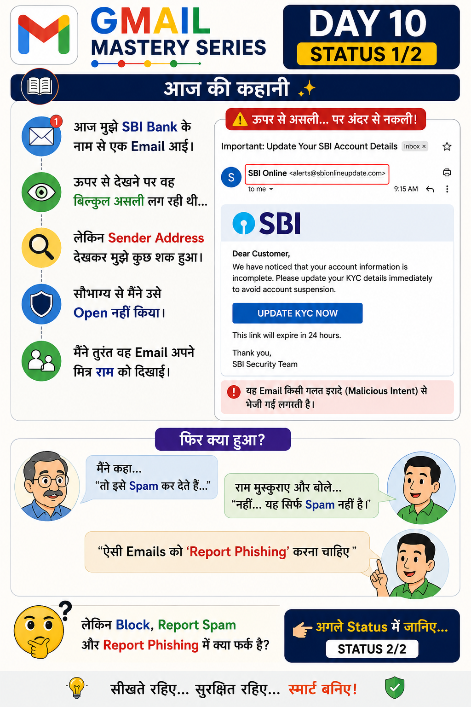

फर्जी बैंक व KYC ईमेल्स को पहचानें — Phishing के ख़तरे
💡 मूल कहानी और फ़िशिंग के लक्षण (The Day 10 Phishing Story):
नीचे दिए गए मूल इन्फोग्राफिक (Day 10 Status 1) में देखें:
"आज मुझे SBI Bank के नाम से एक ईमेल आई। ऊपर से देखने पर वह बिल्कुल असली लग रही थी... लेकिन Sender Address देखकर मुझे शक हुआ। सौभाग्य से मैंने उसे ओपन नहीं किया और अपने मित्र राम को दिखाई!"
फर्जी ईमेल के तीन बड़े ख़तरे (Red Flags):
1. फर्जी प्रेषक पता (Fake Domain): प्रेषक का नाम तो 'SBI Online' दिख रहा था, लेकिन ईमेल पता था: alerts@sbionlineupdate.com (असली बैंक डोमेन जैसे sbi.co.in नहीं!)।
2. तात्कालिकता का डर (Urgency Trigger): ईमेल में लिखा था: 'This link will expire in 24 hours' ताकि घबराकर व्यक्ति तुरंत क्लिक कर दे।
3. संदिग्ध लिंक या बटन: 'UPDATE KYC NOW' जैसा बटन जो फर्जी लॉगिन पेज पर ले जाता है।
⚠️ महत्वपूर्ण सुरक्षा नियम: केवल प्रेषक का पता देखकर भी 100% प्रामाणिकता सिद्ध नहीं होती (क्योंकि कभी-कभी प्रेषक का नाम स्पूफ़ भी हो सकता है)। कभी भी किसी बैंक या सरकारी ईमेल में आए लिंक पर क्लिक करके पासवर्ड या ओटीपी दर्ज न करें!

🔍 पूरा बड़ा देखने के लिए क्लिक करें🎯 आपका प्रैक्टिकल कार्य (Hands-on Task — सुरक्षित अवलोकन अभ्यास):
- 1. सुरक्षित अवलोकन: अपने इनबॉक्स या Promotions टैब में किसी पुरानी सामान्य प्रमोशनल ईमेल को खोलें।
- 2. पूरा प्रेषक पता देखें: प्रेषक के नाम के बगल में बने छोटे तीर (▼) पर क्लिक करके देखें कि उसका वास्तविक ईमेल पता (जैसे
newsletter@company.com) क्या है। - 3. सुनहरा सुरक्षा नियम: किसी भी अज्ञात या संदिग्ध ईमेल के लिंक या अटैचमेंट पर कभी क्लिक न करें। यदि बैंक से कोई संदेश आए, तो हमेशा बैंक की आधिकारिक ऐप या वेबसाइट को अलग से ब्राउज़र में खोलकर ही लॉगिन करें।
✅ अपेक्षित परिणाम (Expected Result):
आप प्रेषक के डिस्प्ले नाम के भ्रम से बचकर उसका वास्तविक डोमेन पहचानना सीख जाएँगे और फ़िशिंग के किसी भी झांसे में नहीं फँसेंगे।